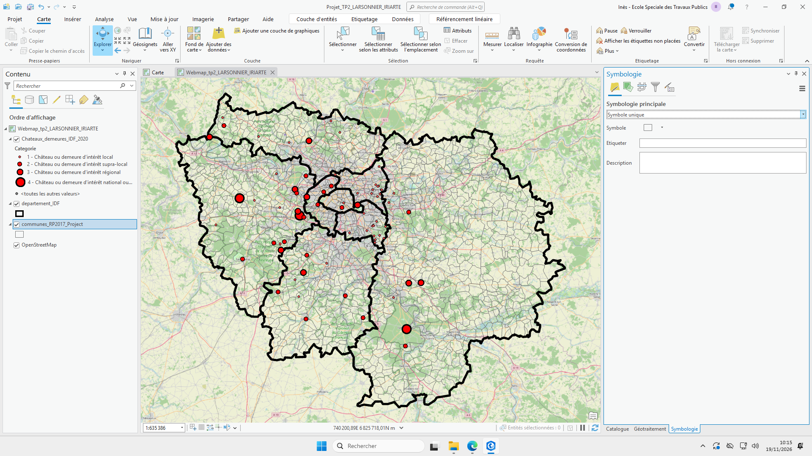

Territoire étudié : la région Île-de-France — 8 départements, 1 287 communes, environ 12,18 millions d'habitants (recensement INSEE 2017).
Données utilisées : localisation des châteaux et demeures (source Institut Paris Region, 76 sites géoréférencés),
communes et départements d'Île-de-France (projet ArcGIS Pro, export GeoJSON en WGS 84 / EPSG:4326), données INSEE 2017.
Objectif : localiser les châteaux et demeures franciliens, les classer par catégorie d'intérêt patrimonial
et cartographier leur répartition entre Paris et la grande couronne.
Cliquez sur un point pour afficher le nom du site, sa catégorie, sa commune et son adresse. Les contours violets correspondent aux 8 départements d'Île-de-France (population affichée au clic).
| Catégorie | Nombre | Part |
|---|
Carte de mise en page réalisée dans ArcGIS Pro : communes, départements et châteaux par catégorie.

Sur les 76 châteaux et demeures recensés en Île-de-France (source Institut Paris Region), répartis dans 64 communes, la catégorie dominante est celle des sites d'intérêt local (45 sites, soit 59 %), suivie de la catégorie supra-local (18 sites, 24 %), régionale (10 sites, 13 %) puis nationale ou internationale (3 sites, 4 % : Versailles, Fontainebleau et Thoiry). Ce dégradé montre que le patrimoine francilien est d'abord un patrimoine de proximité, dont seuls quelques grands exemplaires ont un rayonnement national.
Spatialement, la répartition est plus équilibrée que ce à quoi on pourrait s'attendre : si les Yvelines arrivent logiquement en tête (17 sites, avec Versailles et de nombreux châteaux de vallée), la petite couronne reste bien présente avec 16 sites dans le Val-de-Marne et 12 en Seine-Saint-Denis, contre seulement 3 à Paris intra-muros, où l'urbanisation dense a fait disparaître la plupart des demeures. La grande couronne (77, 78, 91, 95) reste la mieux dotée, ce qui s'explique par la conservation des grands domaines et par une moindre pression foncière.
En croisant avec les données INSEE 2017, on observe que ces sites se situent majoritairement dans des communes de taille moyenne, hors des quartiers les plus denses : le patrimoine de châteaux se concentre là où l'espace — et donc les parcs et jardins — ont pu être préservés.